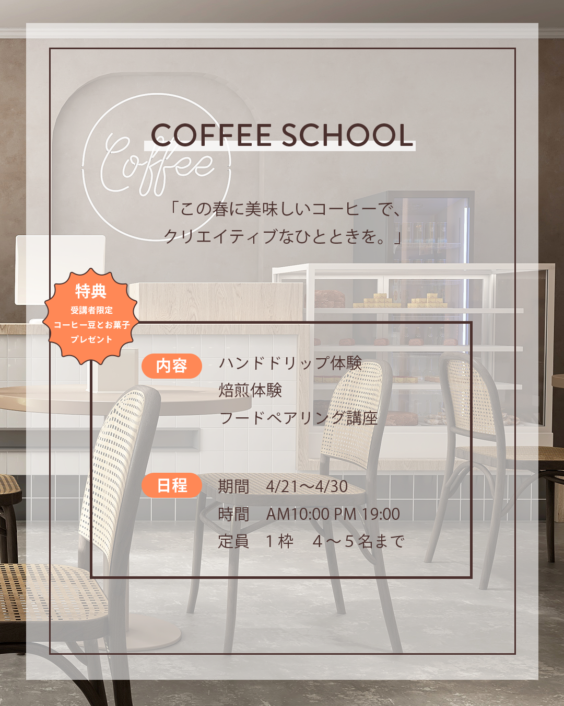

ペルソナ（ターゲット像）
年齢層: 20代後半〜40代くらい。SNSを日常的に利用し、情報収集や購買に活用している層。
ライフスタイル:コーヒーを淹れることに興味があり、自宅で美味しいコーヒーを淹れることが好き。
何か新しいことを始めたいと考えている。
コロナ禍以降、自宅での過ごし方を豊かにすることに関心が高く、
クリエイティブな活動に関心がある人で、ものづくりや創造的な体験に魅力を感じている。
悩み：「美味しいコーヒーを淹れたいけど、どうすればいいか分からない」と感じている初心者。
自己流でコーヒーを淹れているが、もっと上達したいと考えている。
日常に少しの変化や刺激を求めている。
学びの場やコミュニティに関心がある。
美味しいコーヒー体験の提供→ 「この春に美味しいコーヒーで、クリエイティブなひとときを。」というキャッチコピーがそれを直接的に示唆。
新しい趣味やスキルの習得→ コーヒーに関する専門的な知識と技術を体系的に学べる機会を提供し、参加者の「何かを始めたい」という欲求に応えます。
豊かな「おうち時間」の創出→ 自宅で美味しいコーヒーを淹れる喜びを通じて、日々の生活に彩りを持ってもらう。
限定された特別な体験→ 少人数制や「特典」を設けることで付加価値の体験を提供し、店舗に来店を誘導する。
総合的なコーヒー体験→ コーヒーの幅広い側面を学べることで、より深くコーヒーの世界を楽しむことができ、新しい趣味・コミュニティを作る。
アイキャッチとなるタイトルとキャッチコピー:「COFFEE SCHOOL」と「Coffee」のネオンサイン風デザインで、おしゃれかつモダンな印象を与え、視覚的な注目度を高めました。 「この春に美味しいコーヒーで、クリエイティブなひとときを。」というキャッチコピーは、季節感と「クリエイティブ」というキーワードで、単なる技術習得以上の体験価値を提示し、ターゲットの感性に訴求しました。 特典の視覚的強調:「特典」セクションを赤とオレンジのグラデーション、丸みを帯びた形状、大きめのフォントで配置。具体的なインセンティブ（コーヒー豆とお菓子プレゼント）を際立たせ、参加への強力な動機付けとしました。 情報の構造化と可読性の向上:「内容」「日程」などの情報を色付きの帯で明確に区切り、視認性を高めました。フォントサイズや太さの変化で情報の重要度を表現し、ユーザーがスムーズに情報を理解できるよう配慮しました。 ブランドイメージを反映した世界観の構築:ベージュやブラウンを基調とした落ち着いたトーンは、コーヒーのイメージと「クリエイティブなひととき」というコンセプトに合致。背景のカフェ空間と相まって、ターゲットに安心感と魅力的なスクール体験を期待させます。 SNSに最適化された情報提示:SNSバナーの特性を考慮し、情報を簡潔に絞り込みました。これにより、短時間で内容を理解できるような、分かりやすく効果的な情報伝達を実現しました。
